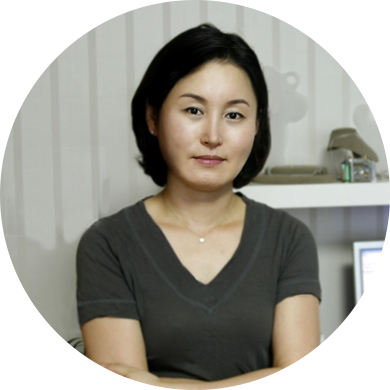
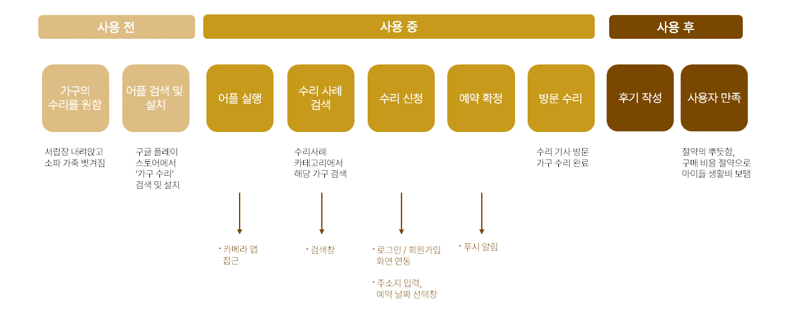

works
PROJECT GOAL
가구수리닥터는 망가진 가구 수리 신청, 일정 부분의 수리 정보를 제공하기 위한 애플리케이션입니다.
해당 앱은 직접적인 방식으로 쉽게 목적을 달성할 수 있고 어렵지 않은 메뉴 구성으로 사용이 수월하다는 장점이 있지만, 중구난방인 이미지, 낮은 가독성, 중복된 메뉴와 부족한 메뉴 설명으로 인해 사용자에게 혼란을 가져올 수 있다는 단점이 있습니다.
이에 해당 애플리케이션에 사용자의 혼란을 최소화하고 동시에 심미적으로 보일 수 있도록 UI/UX 편집 프로젝트를 진행하였습니다.
-
APPLICATION
가구수리닥터
-
기준화면
gallexy S10 360 X 760
-
기여도
팀 작업 (100%)
PERSONA

45세 주부 배경희
'망가진 내 가구를 저렴한 방법으로 계속 사용하고 싶어요'
- 근검절약이 생활의 모토.
- 최근 대학생이 된 아들의 자취 계획으로 다른 생활 지출을 줄이고자 함.
- 5년 전 이사하며 큰 지출을 하여 구매했던 소파의 가죽이 갈라짐.
UX VISION
#접근성
#단순화
#직관적
"내 가구의 재발견"
저렴한 가격으로 가구를 전문적으로 수리하여 계속 사용할 수 있게 한다.
DESIGN
#깔끔한
#부드러운
#아늑한
- #FAEFCA
- #FF9600
- #794700
- #A0A0A0
- pretendard Regular
- pretendard Medium
- pretendard Bold
- 로고에 포인트 색상 사용, 집 안의 가구 수리라는 의미를 수리 도구와 단순화한 집 형상을 함께 표현하여 사용자가 한눈에 알아볼 수 있게 디자인
- 기존 복잡했던 이미지와 아이콘은 심플한 이미지와 아이콘으로 재설정
- 사용자들이 쉽게 접근 할 수 있게 수리사례, 고객후기 메뉴도 홈 화면에 배치
- 가구가 주는 깔끔하고 따뜻한 느낌의 색상 선택
이미지1
이미지2
UX FLOW
위로
좀처럼 끝이 보이지 않던 팀 작업이 끝나고 그 해방감은 아직도 잊혀지지 않고 생생합니다.
해당 프로젝트를 진행하다 중도에 팀장직을 맡게 되어 부담감이 조금 있었습니다. 팀장 자리는 처음이라 팀 프로젝트에서 팀장의 역할이 얼마나 중요한지 미처 알지 못했습니다. 오히려 팀원의 입장이었더라면 좀 더 자유롭게 생각할 수 있지 않았을까 아쉽기도 합니다.
그럼에도 불구하고 저의 의견을 잘 들어주시고 함께 해주신 팀원들 덕분에 프로젝트를 잘 마무리할 수 있었습니다. 각 과정의 결과가 생각보다 훨씬 더디게 나타날지언정 서로에게 힘내라고 북돋아 준 응원이 큰 힘이 되었습니다. 저의 아이디어가 고갈될 때 쯤 팀원들이 좋은 아이디어를 내주시는 등 상호 보완의 관계였기에 끝까지 잘 해낼 수 있었다고 생각합니다.
가장 힘들었던 부분은 어떤 디자인이 '좋은' 디자인인지 답이 없는 고민의 연속이었던 것입니다. 거듭된 고민의 결과로 나온 결과물은 (지극히 개인적으로) 사랑스러울 지경이었습니다.
사용자의 입장에서 UIUX를 디자인하고 구현한 이번 프로젝트로 사소한 부분까지 '사용자가 알기 쉽게' 만드는 것이 기본이자 핵심이라는 것을 배웠습니다. 작업의 목표와 비전이 확실하더라도 그것을 화면에 구현할 때 디자인이라는 것이 단순히 예쁜 것을 넘어서서 사용하는 데 힘이 굉장히 크다는 생각이 들었습니다.